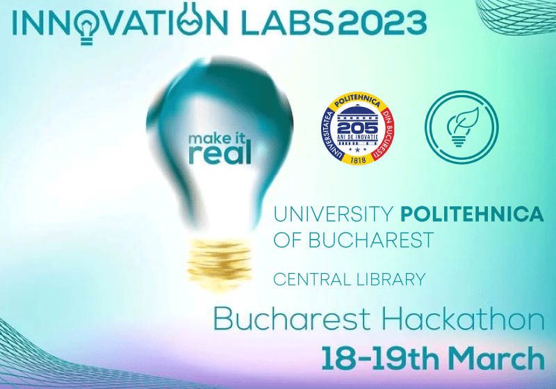

Evenimente Populare
Evenimente Recomandate
Descoperă cele mai interesante evenimente din cadrul facultății! Explorează calendarul și înscrie-te acum la activități care te pot ajuta să îți îmbogățești experiența universitară! Fii parte din comunitatea activă a facultății și profită de fiecare oportunitate de învățare și dezvoltare personală!

Hackathon "Code Your Future" 2023
Hackathon-ul „Code Your Future” 2023, organizat la Universitatea Politehnica din București, a oferit studenților oportunitatea de a dezvolta aplicații inovative într-un cadru competitiv, cu sprijinul companiilor mari din domeniul IT. Participanții au lucrat în echipe pentru a crea soluții tehnologice și au avut șansa de a câștiga premii și oportunități de carieră.
An: 2023
Locație: București, Universitatea Politehnica din București
Detalii